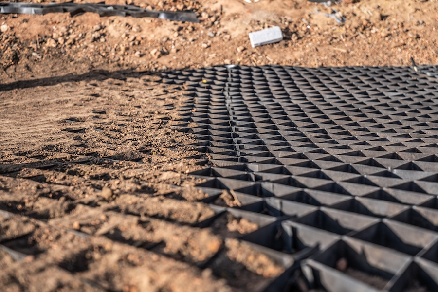
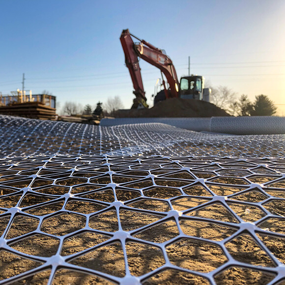
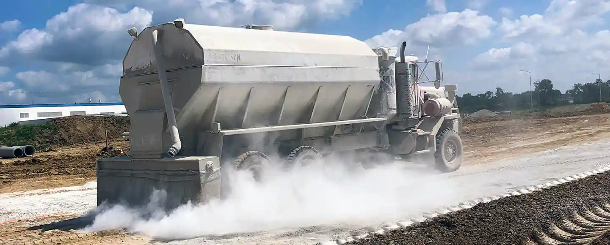
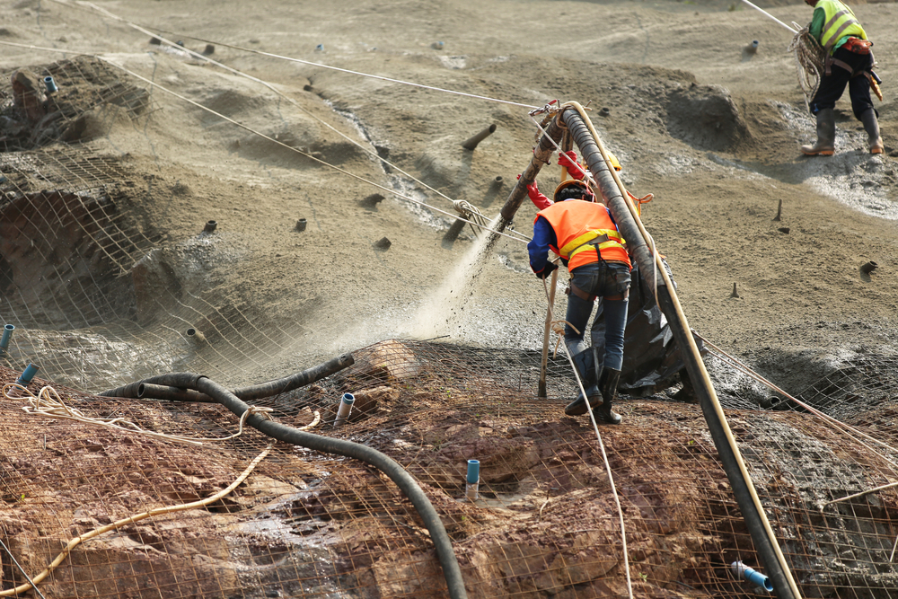
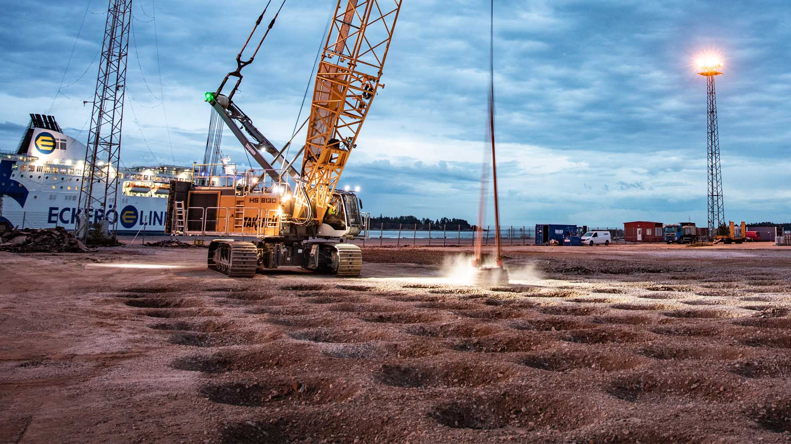
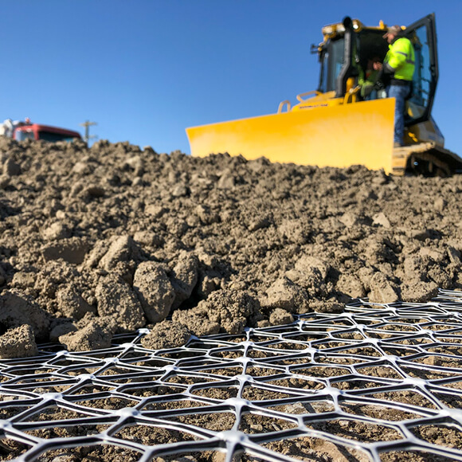

Soil Stabilization Using Pressure Grouting



Soil stabilization using pressure grouting is an advanced and highly effective ground improvement technique used to enhance weak, loose, or water-bearing soil conditions. This method involves the controlled injection of specially formulated grout materials into the soil under pressure, enabling the material to penetrate voids, fractures, and porous zones. As the grout fills and binds these zones, it significantly improves soil strength, reduces permeability, and increases the overall load-bearing capacity of the ground.
This makes pressure grouting an ideal solution for complex geotechnical challenges where conventional soil improvement methods may not deliver reliable or long-term results.
Stabilizing Ground, Strengthening Foundations
Comprehensive Soil Stabilization and Pressure Grouting Solutions with Proprietary Materials for Diverse Subsurface Challenges
At AmmA Groups, we provide comprehensive soil stabilization solutions using advanced pressure grouting systems, tailored to suit a wide range of project requirements and subsurface conditions. Our expertise extends across various applications, including basements, deep excavations, foundation systems, retaining structures, underground utilities, and infrastructure developments. Each project is approached with a thorough understanding of soil behavior, groundwater conditions, and structural requirements to ensure optimal performance.
One of the key advantages of our service is the use of in-house developed grouting materials and specialized admixtures. Unlike conventional practices that rely on standard materials, we manufacture and customize our own grout formulations to meet specific site conditions.
These proprietary materials are engineered to perform effectively under varying pressures, soil types, and moisture conditions.
Our pressure grouting process not only strengthens the soil but also plays a crucial role in controlling water ingress and reducing seepage pathways. By sealing voids and minimizing permeability, we help prevent issues such as soil erosion, settlement, and instability that can compromise structural safety. This is particularly important in deep excavation and basement works, where groundwater pressure and soil movement can pose significant risks if not properly managed.

We employ modern equipment and controlled grouting techniques to ensure precise delivery of materials at the required depth and pressure. Our technical team carefully monitors each stage of the process, adjusting parameters as needed to achieve uniform distribution and maximum effectiveness. This systematic approach ensures that the treated soil achieves the desired strength and stability without causing disturbance to surrounding structures.

In addition to improving soil conditions, our solutions contribute to the overall durability and longevity of the structure. By enhancing ground stability and minimizing future settlement, we help protect foundations and structural elements from potential damage over time. This proactive approach reduces maintenance costs and ensures consistent performance throughout the lifecycle of the project.
Our services are widely implemented across India, where diverse soil conditions and varying groundwater levels require adaptable and reliable engineering solutions. From urban construction projects to large-scale infrastructure developments, we have successfully addressed a wide range of ground improvement challenges with proven results.
At AmmA Groups, our commitment to quality, innovation, and technical excellence sets us apart. By integrating advanced pressure grouting techniques with our proprietary materials and deep industry expertise, we deliver soil stabilization solutions that are not only effective but also sustainable and long-lasting.
Whether you are dealing with weak soil conditions, planning a deep excavation, or seeking to enhance foundation performance, our team is equipped to provide dependable and customized solutions.
With a focus on safety, precision, and durability, we ensure that every project is built on a strong and stable foundation.

